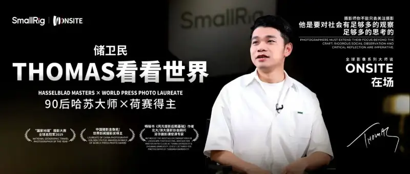
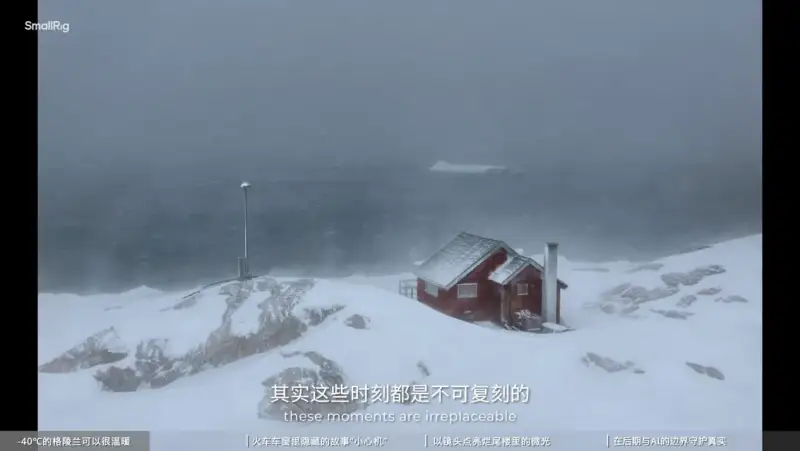
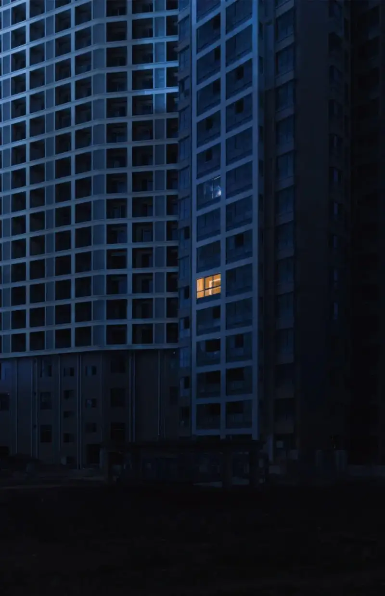
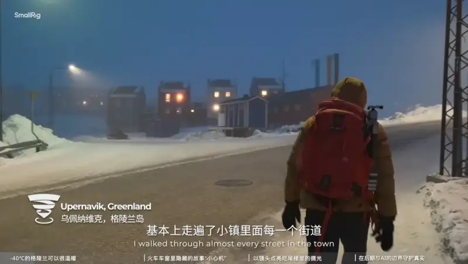
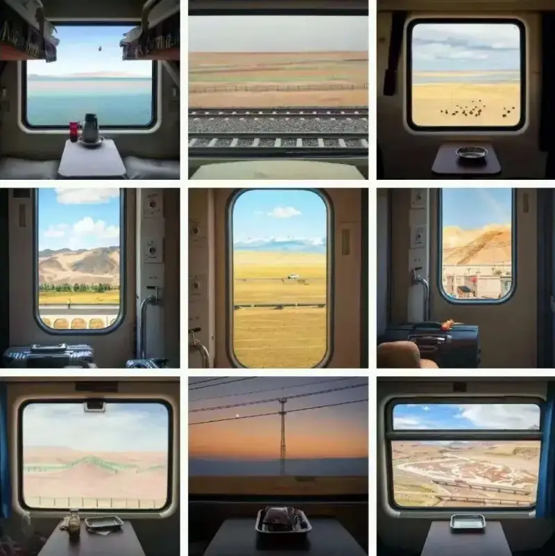
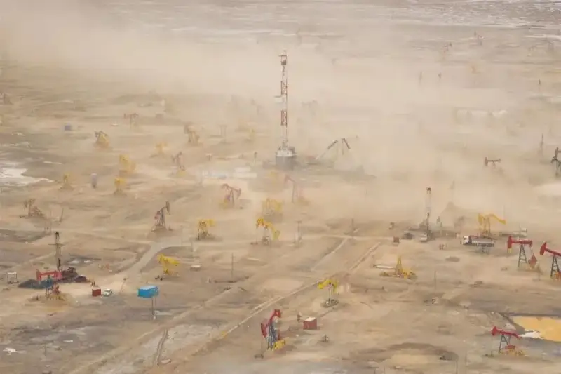
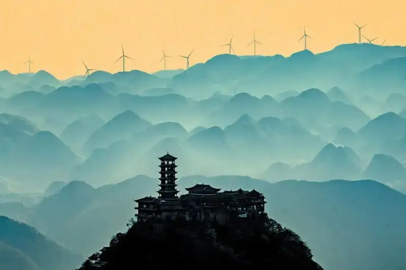
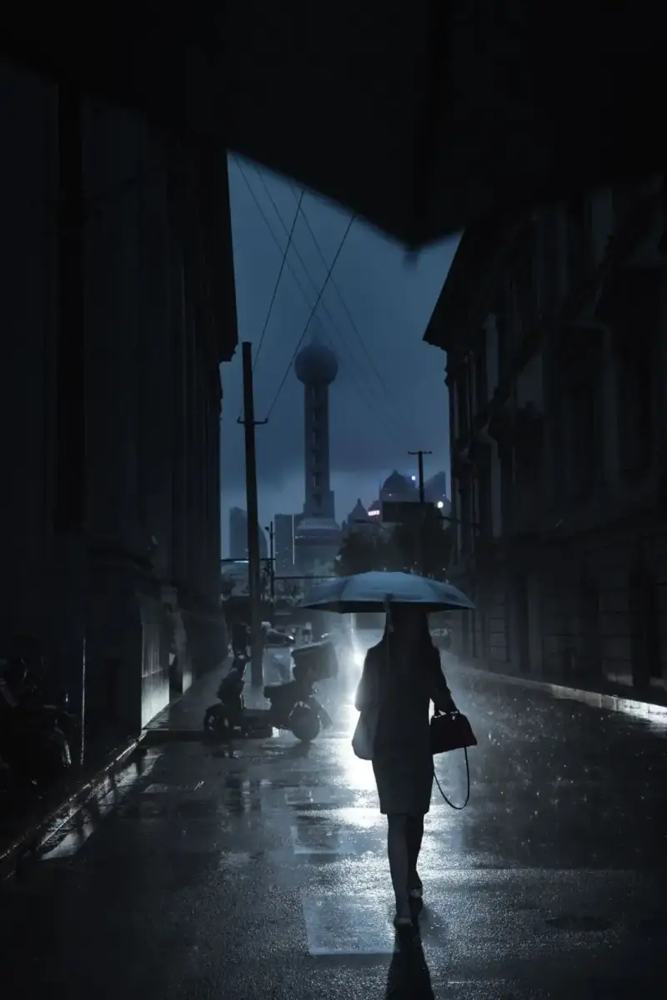

Chu Weimin (Thomas), a post-1990s photographer from mainland China and the first to win the grand prize of the National Geographic Photo Contest, spoke on the Onsite interview series for masters of image. He said: A good photo is waited for, tried through original ideas, and felt with the heart. He also shared how he made key works such as Winter in Greenland, Train Views of China, and China’s New Towers. Through them, more people see a photographer’s human care and artistry.
Onsite is an interview series hosted by SmallRig, a maker of imaging gear. It invites leading voices from around the world to share what drives their work, their stories, their lessons, and their sources of inspiration.
A good photo is waited for
The small town of Upernavik in western Greenland lies under cold winter air for five months each year. It is only 700 kilometers from the Arctic Circle. Apart from the Inuit who have long lived here, the most common visitors are tourists drawn to the Inuit’s colorful little houses.

But someone like Chu Weimin, standing for more than two hours in minus 40 degree cold on open ground near the town airport, is rare. At the coldest point of the year, he took the one flight a week, and with a bought map he found his way into the town step by step.
Upernavik was his destination. After two hours of waiting, he saw the scene he hoped for. A family of three walked hand in hand into the middle of the road. The weather was right, the blue hour was timed to the minute, and this decisive moment came together. He pressed the shutter and took this rare photo.
In the frame, most of the town is buried in blizzard, dark and hazy. The only clear thing is the snow road lit by streetlamps in the middle of town. Right in the center of the road, the parents walk fast, holding their child between them.
In such a cold scene, the first feeling is still warmth, the warmth of being present. It feels as if you stand where the photographer stood, quietly watching the family walk away.
In 2019, this photo, Winter in Greenland, won the grand prize of that year’s National Geographic Travel Photo Contest. Its author was Chu Weimin, a post-1990s photographer. Out of love, he left a well-paid software job, traveled through more than 30 countries and 200 cities, and began his career as a professional photographer.
In 2022, his photo series Glimmers in the Unfinished Buildings, on pre-sale housing and stalled construction, won a World Press Photo award, the most respected international prize for news photography. In the images, residents left with nowhere to go, trapped by stalled buildings, live barely in unfinished rooms under simple lights. The series helped more people understand the stalled-housing problem that often appears in East Asian countries such as China, Japan, and Korea.

Whether he shoots a family holding hands in Greenland, or cuts into the housing market with the sharpness of a knife, Chu wants his work to feel present, with the photographer present, a stance present, and a point of view present. This is also the core idea behind SmallRig’s Onsite series: reach the scene, keep acting, and keep making chances for more people to see a wider world. That is the point of image making today.
In his work, Chu stays highly rational and logical. After he learned about the island through other photographers’ pictures, he went four times, and his total time in Greenland passed six months. Following his interests on the map, he slowly found his subject on the island. The buildings and residents, half hidden in winter snow and set against natural beauty, became his main subject.

So for Chu, a work like Winter in Greenland is not so much captured as waited for. A good photo also takes long accumulation, exploration, and patient waiting.
See China, and see a China that is changing
Of course, sometimes a special moment waits for Chu to find it. His best-known recent series, Train Views of China, began by chance. In 2021, on a train to Golmud via Xining, he was drawn to the Gobi Desert outside the window. The Gobi holds much natural scenery, but more importantly you also see new roads and chemical plants. The landscape has not changed for thousands of years, but buildings and industry stand for a decade of change. At once he saw a direction for his long-planned project on Chinese nature: to shoot scenery that shows both famous sights and the development of recent decades.
More than that, the train window is a natural frame for this subject. A photo taken through a train window answers where to look and what to look at. In a way it also answers who is looking. The people who cross China by train have always been among the key witnesses of its development. Trains and high-speed rail also make it ever easier to travel far to see the scenery.
The gaze and the camera trained on scenery through a train window are a way of seeing that is unique to today’s China.
And it is a uniquely Chinese sight to see the Gobi and a chemical plant in one frame, or the Yarlung River outside a Fuxing train beside distant power pylons in eastern Tibet.

In Train Views of China, Chu gives plain landscape photography a human warmth, a gaze that is present. Over the years of China’s growth, countless people have taken trains across mountains and rivers for countless reasons, and countless others have watched buildings change while the scenery stayed the same. A changing era and beautiful views are both large stories. Only when a gaze is present do we see specific, living people, and can imagine how each one felt, sitting at the window and looking out.
In one photo from the Lhasa to Nyingchi railway, Chu chose a sleeper table that told a story. On it stood many colorful drink bottles: mineral water, cola, juice, an insulated cup, and milk. Outside were the peach blossoms covering the hills of Nyingchi. The photo was taken in the first peach-blossom season after the line opened.
The peach blossoms outside answer what the railway brought to out-of-town tourists. Through the drink bottles, Chu wants people to ask what the railway brought to locals. Infrastructure? Economic growth? Or more choices as a consumer? For him, it brought the right to choose. When you want a drink on the train, you now have more and more options, and that is a big local change.
Beyond Train Views of China, another work, China’s New Towers, also shows his care for social and human issues and his artistic range. Its topic is narrower: around new energy, Chu recorded a series of new towers, wind turbines.

For Chu, towers have long been a key aesthetic symbol in Chinese culture. In the past, towers were mostly pagodas, standing for what civilization understood of faith. To see a wind turbine as today’s new tower is to show what civilization now understands of technology. A tower is a religious metaphor and an architectural ideal, and also a stand-in for energy, materials, and science.
So when he shot China’s New Towers, Chu drew heavily on the style of traditional Chinese landscape painting. This lets viewers understand the turbines and their setting from a fresh aesthetic angle, and grasp more fully the effect of China’s new-energy industry.

From religion to science, the towers that reach the sky keep a similar shape and a similar meaning. In China’s New Towers, Chu seeks the beauty of harmony between people and nature, and between built things and nature. China’s new-energy industry now does very well, yet there are few photos of it. Chu feels he should take this work, with its Eastern aesthetic, to international contests, so European photographers who also shoot new energy can understand today’s China.
In his work you can sense a romance that belongs to a science mind. On one side is grand, beautiful nature. On the other, he always notices the modern buildings hidden in the view. Rather than scenery unchanged for a century, Chu wants viewers to see the changing side of China, to see the peach blossoms of the Yarlung River sit at ease with Tibet’s power grid, solar farms, and hydro stations in one frame.
Waiting made the trip worth it
In 2012, Chu finally knew that a programmer’s life in a cubicle was not what he wanted. After three years as a full-time software engineer, he chose to follow his long love of photography and turned from an amateur into a professional.
Yet, like the calm and care he shows in his work, Chu does not see quitting as impulsive. If he had not studied again and again how a photographer earns a living, he might never have taken that brave step.
His science background keeps his work logical. In his craft, he shows the edge of a science mind. He likes to plan ahead carefully and make his arrangements.
Waiting, borrowing, weighing, and repeating are the words Chu returns to when he describes his process. As a photographer, he has not only boundless passion but also quiet confidence in his work. Before he is sure a work is truly his own, waiting and thinking are steps he must go through. In an age when social media makes thousands of photos a day, uniqueness and style are the base on which a photographer stands, at least in his view.
If everyone shoots it one way, you must have a new idea, and refuse to shoot it that way. For Chu, good gear matters, but good technique and thinking matter more. For a beginner or a pro, being original is the only way forward.
This is also the idea behind SmallRig, a maker of imaging gear. SmallRig wants to work with more partners, push the boundaries of imaging, make creation freer, give photography more style, and help every photographer find original creativity. Through its user-maker co-creation model, SmallRig has built a close loop between products and users. Its platform now brings together thousands of professional photographers and leading gear makers around the world.
One of his proudest photos, of a lane near the Bund in Shanghai, is fully original. Most people shoot Shanghai on a clear day. He chose a rainy day after a typhoon, when the streets were nearly empty. Others shoot the lit Oriental Pearl Tower at night. He shot it before the lights came on, hazy in the clouds.
In the end, the subject was a stylish young woman walking fast. Even when he shoots Pudong, the old houses of the Bund, and the Oriental Pearl Tower, the best-known symbols of Shanghai, Chu still wants to show a more diverse Shanghai that many people overlook.

Only through such waiting and thinking does Chu get the image he wants. Such an image is not only a search for natural beauty. It also needs people. Only when a human story and human civilization join the beauty of nature does an image endure and become irreplaceable.